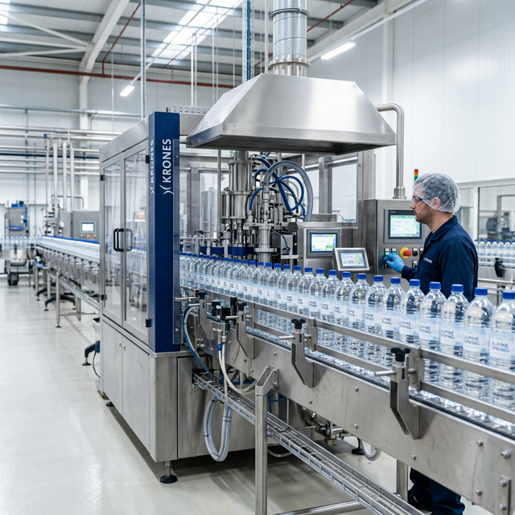

Processing and distributing high-quality mineral water to distributors across the northern region.
KOPELADAR's mineral water production facility uses state-of-the-art filtration and bottling technology to ensure the highest standards of purity. We supply mineral water to various institutional partners and commercial distributors throughout Kelantan and neighboring states.
Multi-stage purification process for ultimate purity.
In-house testing for mineral consistency and safety.
Efficient logistics network for northern region supply.
